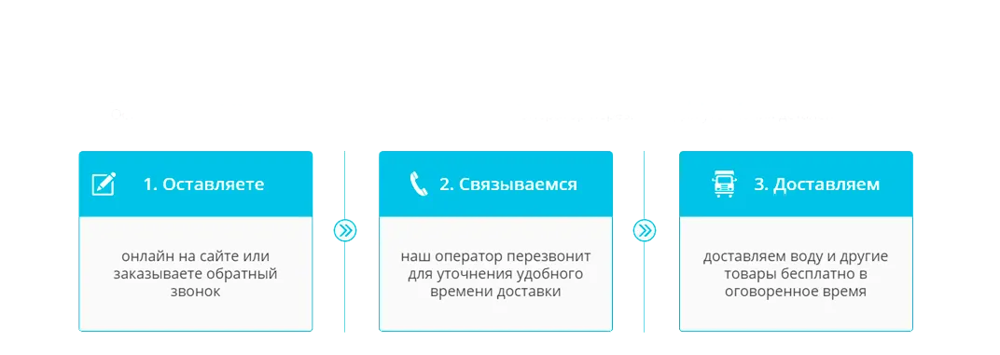

Продажа воды и доставка "Кришталево-чиста питна вода"
Нам доверяют уже более 10 лет!

Для того чтобы ежедневно наслаждаться отменным вкусом качественной и чистой воды, заказывайте "Кришталево-чисту питну воду" удобными для вас способами. Продажа воды осуществляется так:
- Бесплатная доставка в офис и на дом в Киев или Бровары
- Самовывоз воды прямо с завода в любой день недели, в любое время
Продажа воды с завода в любой день недели, в любое время дня
Употребляя "Кришталево-чиста питна вода" Вы обязательно:
- Улучшите общее состояние здоровья на долгие годы
- Получите качественную воду, имеющую идеальный уровень pH для усваивания Вашим организмом
- Поправите здоровье близких, так как вода очень полезна пожилым людям и малышам
По очистке обратный осмос и озоновая стерилизация — завод №1 в Украине!
Чем мы занимаемся
Crystal Water доставляет очищенную питьевую воду в бутылях по 19,9 л домой и в офисы в Броварах и Киеве. Воду «Кришталево-чиста питна вода» мы очищаем в 8 этапов: механическая фильтрация, умягчение, угольная фильтрация, обратный осмос и озонная стерилизация, после чего вода доводится до стабильного уровня pH 7,5.
Заказать воду можно по телефону, через Telegram-бот или форму на сайте. Минимальный заказ — 2 бутыля; первую бутыль можно получить на пробу бесплатно. Кроме воды, вы можете заказать помпу Blue Rain для разлива и уточнить наличие кулеров.
Почему выбирают Crystal Water
- 8 ступеней очисткиОбратный осмос и озонная стерилизация.
- Стабильный pH 7,5Одинаковый вкус и состав от бутыли к бутыли.
- Доставка вечеромПривозим в Броварах и Киеве, в том числе после 20:00.
- Бесплатный экспресс-анализПроверим TDS и жёсткость ваших образцов воды.
Как заказать воду: 4 шага
- Выберите количествоМинимальный заказ — 2 бутыля по 19,9 л.
- Оставьте заявкуФорма на сайте, телефон или Telegram-бот — как удобнее.
- Получите водуДоставка домой или в офис в Броварах и Киеве, в том числе после 20:00.
- Заказывайте сноваПовторный заказ — тем же способом, без повторного залога.
Отзывы клиентов
«Заказываю воду Crystal Water уже два года. Очень удобно, что привозят вечером — мне как раз подходит по графику работы. Вода действительно вкусная!»
«Лучший сервис в Броварах. Всегда вежливые курьеры, вода чистая, никакой примеси хлора. Дети пьют с удовольствием.»
«Пользуемся водой в офисе. Качество стабильное, цена адекватная. Спасибо за оперативность и первую бесплатную бутыль!»
Частые вопросы о компании
Где вы находитесь?
Г. Бровары, ул. Кооперативная, 3 А. Воду можно забрать самостоятельно — самовывоз возможен в любой день недели.
В какие часы вы работаете?
Пн—Пт: 08:00–20:00, Сб—Вс: 09:00–17:00. Доставка воды в Броварах возможна и после 20:00 — согласуйте время при заказе.
Куда доставляете воду?
В офисы и дома в Броварах и Киеве.
Как с вами связаться?
По телефонам +38 (063) 788-68-80 и +38 (063) 530-40-50 либо через Telegram-бот @CrystalWaterBro_bot.
📦 Заказать воду
Оставьте короткую заявку — мы быстро свяжемся.